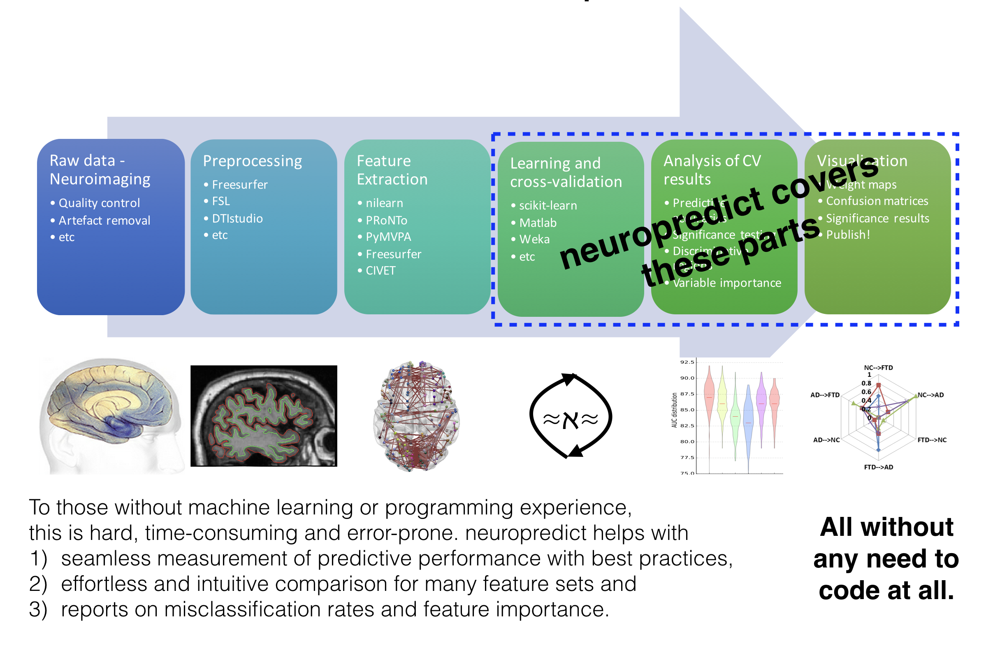

About¶
neuropredict : easy and rigorous estimation of predictive power
The aim of neuropredict is to automatically assess the predictive power of different sets of features (such as resting-state connectivity, fractional anisotropy, subcortical volumes and cortical thickness features) provided by the user, or automatically read from the processing of popular tools such as FSL, DTIstudio, AFNI and Freesurfer. It is aimed to lower or remove the barriers at users interested in measuring the classification accuracy of different features they are interested in studying.
On a high level,

On a more detailed level,
{kind=link}
Motivation¶
neuropredict sounds similar (on the surface) to other software available, such as scikit-learn (which is used underneath), however our aim here is to lower the barriers as much as possible, or remove them altogether and make machine learning seamless! For example,
You don’t have to code when you use neurpredict - saves you a lot of headache with development and debugging!
You don’t have to learn how the machine learning toolkits work and the nitty-gritty of their APIs. This can be daunting and time-consuming, and can likely lead to bad choices made in terms of how proper cross-validation is done.
Toolkits like scikit-learn are geared towards developers (focusing on the API to support most generic uses), but not focused easing your workflow, esp. when analyzing and comparing many feature sets.
Comprehensive analysis of misclassified subjects (histogram at top right in figure below) in different pairs of classes is not in the interest of other toolkits and not possible without significant rewriting of many underlying components of scikit-learn.
Thorough analysis of misclassification rates for different feature sets (radar plot at bottom right in figure below) is not possible in scikit-learn without significant development (which only provides basic metrics of classifier performance)..
Methods and tools for statistical comparison of multiple features (and models) is missing in other toolkits, and which is a priority for neuropredict.
All you would need to provide are your own features (such as connectivity, FA, MD or a Freesurfer output directory) and obtain an easy to read and comprehensive report on the predictive power of the multiple features you are interested in, along with well-packaged export of performance metrics for sharing and posthoc comparison.
Broad applicability beyond neuroscience¶
Some parts of neuropredict are slightly geared towards neuroscience data (where the need for machine learning is high) offering direct integration of certain popular tools, via enabling users to use features produced by them. However, there is no neuro-related requirement in either source or structure of the data. Inputs are not restricted to neuro-data, and you could input any arbitrary set of features via pyradigm or CSV files e.g. from astrophysics, biology or chemistry.
Happy machine learning!
And neuropredicting.
Check the Usage and Input formats pages.
Your feedback will be appreciated.